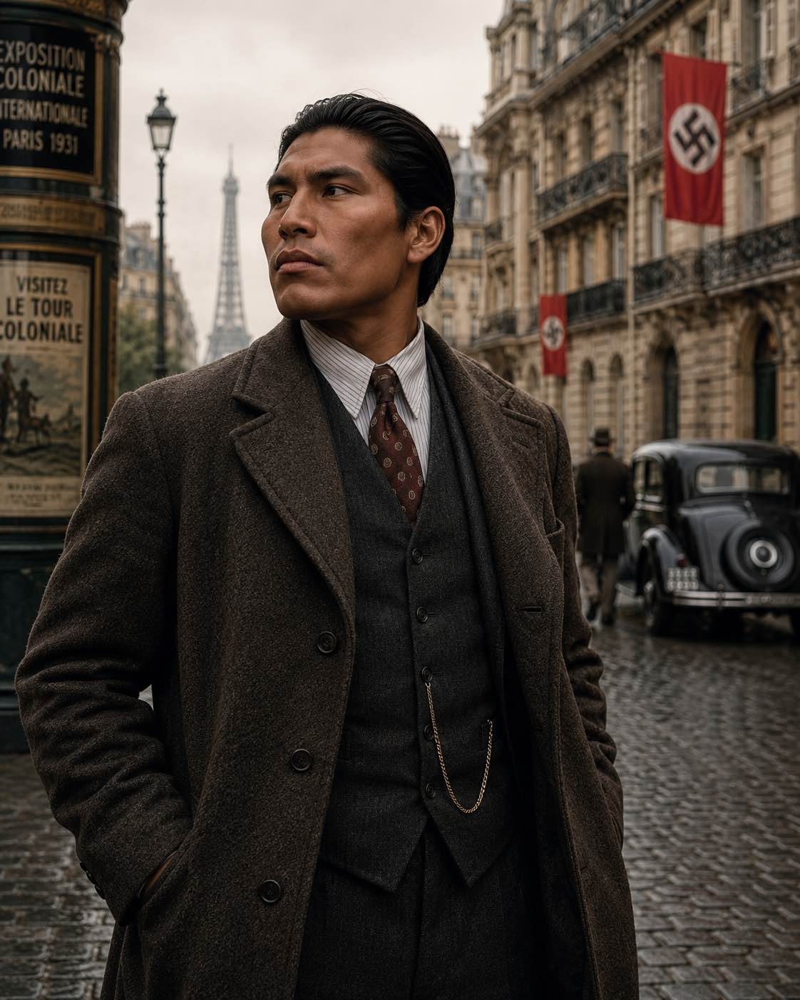
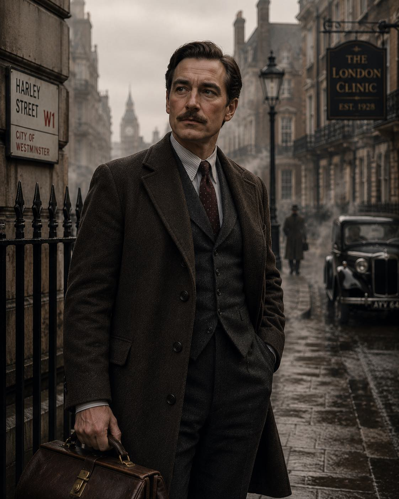
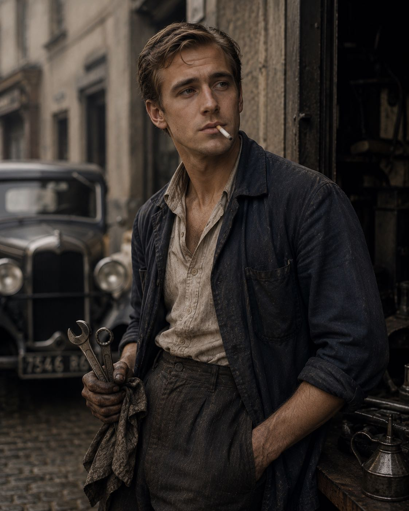
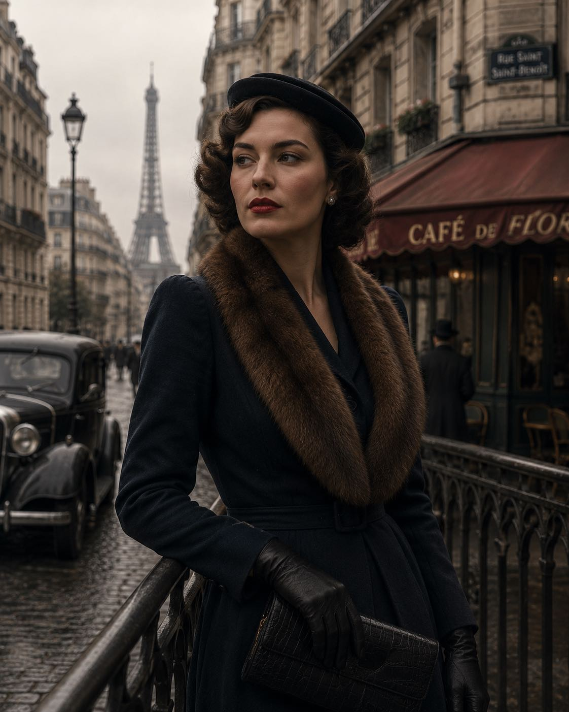

Shadows of Atlantis
Overview
It is the summer of 1939 and as storm clouds gather over Europe, word reaches the Allies of the curious disappearance of Dr. Botho Ehrlichmann, a noted academic and scholar.
Characters
| Name | Archetype | About | Portrait |
|---|---|---|---|
| Calvin Crowfoot | Infiltrator | A deadly commando who underwent secret experimental tests |  |
| Dr. Ralph Bobbins | Boffin | A front-line medic with a mysterious past |  |
| Louis Lafite | Grease Monkey | A getaway driver who has experienced prophetic dreams |  |
| Garance de Winter | Con Artist | A confident saboteur who is wanted for something in her past |  |
Key characters
| Name | Affiliation | About |
|---|---|---|
| Lieutenant Strang | Section D | The handler and liaison for the agents. |
| Piotr Wierzbicki | None | A seven year old who has disturbing visions of remote events. |
| Karl Hoffmann | None | A Viennese businessman whose business connections may get him in trouble. |
| Professor Richard Deadman | Section D / Majestic | Expert in esoteric history and influential in military intelligence. |
| Count Erich Albrecht | None | Host of engaging and intellectual gatherings. |
| Vera Kastner | ex-Black Sun | Composed and intelligent researcher who was "scouted" by Black Sun but was deemed superfluous by Vogel, to his downfall. |
| Hauptsturmfuhrer Vogel | Black Sun | Medium-high level official in Black Sun. |
| Gotthold Fuchs | Nachtwolfe | Unknown |
| Gisela Waltrun | Abwehr (German Military Intelligence) | Unknown |
Preludes
Prelude 1: The Last Train
The agents have to escort the "package" - a seven year old boy called Piotr - from Krakow to Vienna, where Professor Deadman will meet them.
Prelude 2: The Conclave
Karl Hoffmann, a talkative textile trader who the agents met on their way to Vienna, is in a panic. He has gaps in his memory from the "party" he was invited to, and he can't stop himself inviting everyone he meets to another gathering tonight.
The Adventure
Mission 1: Vienna
Gisela asks for help finding out who killed her fiancé, an academic who was translating an ancient text. The agents find his journal and fight off a cult within the German army - the Nachtwolfe. The journal tells of an ancient artifact made up of six pieces.
Mission 2: Rome
The first piece is supposedly in Rome. There, they race to beat Nachtwolfe to it in some tunnels under the city, but also have to fight off Serpent People along the way.